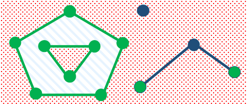
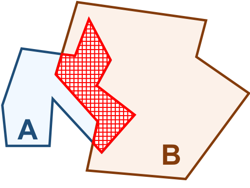
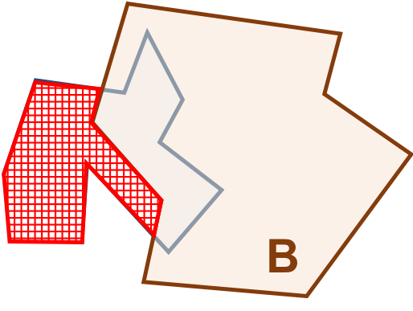
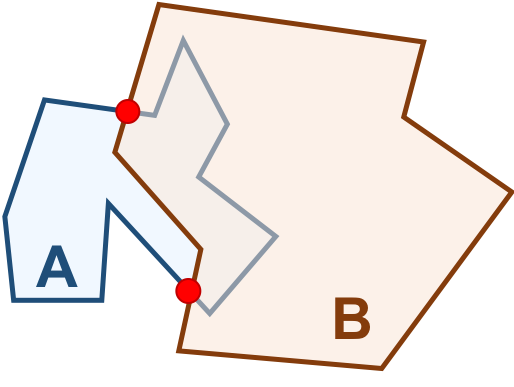
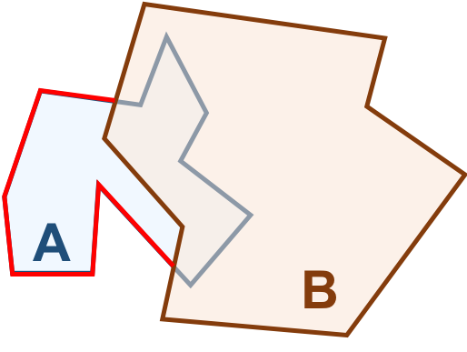
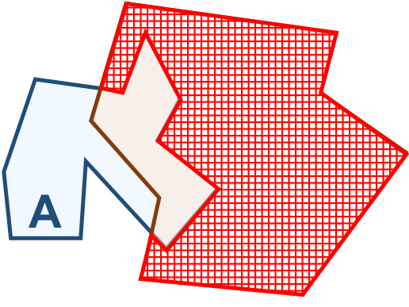
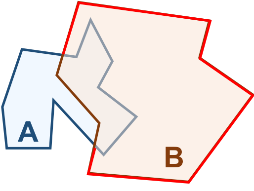
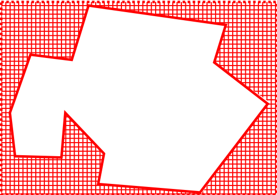

8.3.1. Matriz de 9-intersecções Estendida Dimensionalmente¶
Os relacionamentos espaciais são definidos com base no paradigma da Matriz de 9-Intersecções Estendida Dimensionalmente (DE-9IM) proposto por Clementini et al. (1993). A abordagem básica desse método consiste em comparar dois objetos geométricos através de testes com a intersecção entre seus interiores, fronteiras e exteriores. Desta forma, podemos construir uma matrix \(3 \times 3\) como a mostrada abaixo:
\(Interior(B)\) |
\(Fronteira(B)\) |
\(Exterior(B)\) |
|
|---|---|---|---|
\(Interior(A)\) |
\(dim(I(A) \cap I(B))\) |
\(dim(I(A) \cap F(B))\) |
\(dim(I(A) \cap E(B))\) |
\(Fonteira(A)\) |
\(dim(F(A) \cap I(B))\) |
\(dim(F(A) \cap F(B))\) |
\(dim(F(A) \cap E(B))\) |
\(Exterior(A)\) |
\(dim(E(A) \cap I(B))\) |
\(dim(E(A) \cap F(B))\) |
\(dim(E(A) \cap E(B))\) |
Na matriz acima (Tabela 8.3), \(I(A)\), \(F(A)\) e \(E(A)\) referem-se, respectivamente, ao interior, fronteira e exterior do objeto \(A\). De maneira análoga, \(I(B)\), \(F(B)\) e \(E(B)\) referem-se, respectivamente, ao interior, fronteira e exterior do objeto \(B\).
A dimensionalidade máxima dos objetos resultantes da intersecção dos componentes avaliados, \(dim(x)\), pode ser:
\(\emptyset\): Caso os componentes não tenham intersecção. Adotaremos o valor \(-1\) para este caso.
\(0\): Se a intersecção dos componentes resulta em um ponto.
\(1\): Se a intersecção dos componentes resulta em alguma curva.
\(2\): Se a intersecção dos componentes resulta em alguma superfície. Adotaremos também os termos Área ou Região como sinônimos.
A Tabela 8.4 ilustra cada um dos componentes dos tipos de objetos geométricos definidos na OGC-SFS.
( a ) I e E Ponto |
( b ) I e E Coleção Pontos |
( c ) I, F e E Curva Aberta |
|---|---|---|
|
|


( d ) I e E Curva Fechada |
( e ) I, F e E Col. Curv. Abertas |
( f ) I e E Col. Curv. Abertas |
|---|---|---|
|
|
|


( g ) I, F e E Polígono |
( h ) I, F e E Coleção Polígonos |
( i ) I, F e E Coleção Geom. |
|---|---|---|
|
|
 |


A fronteira de um objeto geométrico é formada por um conjunto de objetos geométricos de uma dimensão abaixo do objeto em questão.
Assim, a fronteira de um objeto do tipo ponto (Point) é o conjunto vazio (\(\emptyset\)), uma vez que um ponto é um objeto \(0\)-dimensional (dimensão topológica). Observe na Tabela 8.4a que no caso de um ponto, temos apenas a definição de seu interior, destacado em azul escuro, e seu exterior, representado pela região em vermelho. Portanto, o interior de um ponto é um objeto \(0\)-dimensional e seu exterior, um objeto \(2\)-dimensional.
Um objeto geométrico do tipo MultiPoint, que também é \(0\)-dimensional, tem sua fronteira definida como o conjunto vazio (\(\emptyset\)). O interior é formado pelos próprios pontos da coleção, destacados em azul escuro na Tabela 8.4b, e o exterior é região destacada em vermelho nessa tabela.
A fronteira de uma curva aberta (Curve) consiste nos pontos inicial e final dessa curva. A Tabela 8.4c mostra uma exemplo de curva aberta, onde os pontos destacados em verde formam a fronteira dessa curva. Portanto, a fronteira de uma curva aberta é um conjunto de objetos geométricos \(0\)-dimensional. O interior de uma curva aberta é formado pelos infinitos pontos de sua imagem, exceto os pontos da fronteira. Na Tabela 8.4c, a linha em azul escuro corresponde ao interior da curva, que é um objeto geométrico \(1\)-dimensional. O exterior da curva é representado pela região em vermelho que não contém os pontos da fronteira e do interior da curva.
A fronteira de uma curva fechada (Curve) é o conjunto vazio (\(\emptyset\)). A Tabela 8.4d mostra um exemplo de curva fechada. Nessa tabela, podemos observar que o interior é formado por todos os pontos da curva, incluindo os pontos inicial e final, formando um objeto geométrico \(1\)-dimensional. O exterior de uma curva fechada é uma região, um objeto \(2\)-dimensional, destacado em vermelho nessa tabela.
A fronteira de uma coleção de curvas (MultiCurve) consiste nos pontos na fronteira de um número ímpar de elementos da curva. A Tabela 8.4e mostra um exemplo de coleção de curvas abertas. Repare que os pontos destacados em verde formam a fronteira dessa curva, enquanto os pontos sobre as imagens das linhas, destacados em azul escuro, forma seus interiores e seu exterior é destacado pela região em vermelho. A Tabela 8.4f ilustra a regra de que os pontos da fronteira devem pertencer a um número ímpar de elementos da curva.
Uma coleção de curvas (MultiCurve) é dita fechada se todos os seus elementos são fechados, consequentemente, a fronteira de uma coleção de curvas fechadas é o conjunto vazio (\(\emptyset\)).
A fronteira de um polígono (Polygon) consiste no seu conjunto de anéis (LinearRing). A Tabela 8.4g ilustra esse caso. Repare que o exterior de um polígono com buraco é desconectado.
A fronteira de uma coleção de polígonos (MultiPolygon) consiste no conjunto de anéis (LinearRing) de seus polígonos (Polygon) (Tabela 8.4h).
A fronteira de um conjunto de objetos geométricos heterogêneos (GeometryCollection) cujo os interiores dos seus elementos são disjuntos, consiste nos objetos geométricos das fronteiras desses elementos obedecendo à regra de que os pontos devem pertencer a um número ímpar de elementos (Tabela 8.4i).
Vamos considerar os objetos geométricos apresentados na Figura 8.2. Podemos estabelecer o seguinte:
\(I(A)\): área mostrada em azul claro.
\(F(A)\): formada por um único anel (externo), em azul escuro.
\(E(A)\): é definido como toda a região do espaço que não compreenda a fronteira e o interior de \(A\).
De maneira análoga:
\(I(B)\): área mostrada em laranja claro.
\(F(B)\): formada por um único anel (externo), em laranja escuro.
\(E(B)\): é definido como toda a região do espaço que não compreenda a fronteira e o interior de \(B\).

Figura 8.2 - Configuração espacial de dois objetos geométricos \(A\) e \(B\).¶
O relacionamento espacial definido por \(A\) e \(B\) segundo a matriz de intersecções é a seguinte:
\(Interior(B)\) |
\(Fronteira(B)\) |
\(Exterior(B)\) |
|
|---|---|---|---|
\(Interior(A)\) |
\(2\) |
\(1\) |
\(2\) |
\(Fonteira(A)\) |
\(1\) |
\(0\) |
\(1\) |
\(Exterior(A)\) |
\(2\) |
\(1\) |
\(2\) |
A matriz acima foi definida considerando:
Os interiores de \(A\) e \(B\) são regiões, isto é, objetos \(2\)-dimensional. A intersecção desses dois componentes forma uma nova região, a área em vermelho na Tabela 8.6a, que também é um objeto \(2\)-dimensional. Logo, a \(dim(I(A) \cap I(B)) = 2\).
A fronteira de \(B\) é formada por um anel (laranja), um objeto \(1\)-dimensional. A intersecção entre \(I(A)\) e a \(F(B)\) forma uma linha, destacada em vermelho na Tabela 8.6b, que é um objeto \(1\)-dimensional. Logo, a \(dim(I(A) \cap F(B)) = 1\).
O exterior de \(B\) é uma região. A intersecção do \(I(A)\) e o \(E(B)\) forma a área destacada em vermelho da Tabela 8.6c. Logo, a \(dim(I(A) \cap E(B)) = 2\).
A fronteira de \(A\) é formada por um anel (azul). A intersecção entre \(F(A)\) e o \(I(B)\) forma uma linha, destacada em vermelho na Tabela 8.6d, que é um objeto \(1\)-dimensional. Logo, a \(dim(F(A) \cap I(B)) = 1\).
A intersecção entre as fronteiras de \(A\) e \(B\) são os pontos mostrados em vermelho na Tabela 8.6e. Como um ponto é um objeto \(0\)-dimensional, a \(dim(F(A) \cap F(B)) = 0\).
A intersecção entre a fronteira de \(A\) e o exterior de \(B\) forma a linha mostrada na Tabela 8.6f. Logo, a \(dim(F(A) \cap E(B)) = 1\).
A intersecção entre exterior de \(A\) e interior de \(B\) forma uma área (Tabela 8.6g). Logo, a \(dim(E(A) \cap I(B)) = 2\).
A intersecção entre exterior de \(A\) e fronteira de \(B\) forma a linha mostrada na Tabela 8.6h. Logo, a \(dim(E(A) \cap F(B)) = 1\).
A interseção entre os exteriores de \(A\) e \(B\) formam uma área (Tabela 8.6i). Logo, a \(dim(E(A) \cap E(B)) = 2\).
( a ) \(I(A) \cap I(B)\) |
( b ) \(I(A) \cap F(B)\) |
( c ) \(I(A) \cap E(B)\) |
|---|---|---|
 |
|
 |

( d ) \(F(A) \cap I(B)\) |
( e ) \(F(A) \cap F(B)\) |
( f ) \(F(A) \cap E(B)\) |
|---|---|---|
|
 |
 |

( d ) \(E(A) \cap I(B)\) |
( e ) \(E(A) \cap F(B)\) |
( f ) \(E(A) \cap E(B)\) |
|---|---|---|
 |
 |
 |